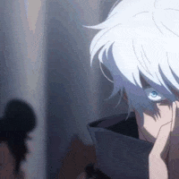
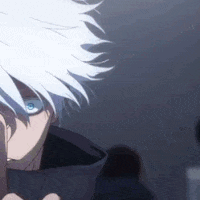

존재하지 않는 기억들
댓글
추억돋네


지지?
막짤 ㅋㅋㅋㅋㅋㅋ
ㅋㅋ가로등 졸라 윳기넹ㅋㅋㅋ


내가 잘못 기억하는 거 있으면 지적 좀.
마법사의 돌) 해리가 퀴럴에게 공격당할 때 해리를 구해주면서 등장. 함께 볼드모트를 무찌름.
비밀의 방) 질투심이 폭발한 끝에 톰의 일기장의 꼬임에 넘어가 붙잡힌 히로인이 됨. 해리가 구함. 지니? 그게 누군데?
아즈카반의 죄수) 해리가 호그스미드에 가지 못 하자 특산품 들고 "넌 이거 못 먹어봤지? 하나 줄게." 시전. 하지만 해리는 투명 망토로 다녀왔기에 그저 아니꼬워 하며 거절.
불의 잔) 해리가 불의 잔에 자신의 이름을 넣었다는 오명으로 온화한 덤블도어와 론발놈을 포함한 모두에게 욕을 먹고 해리의 멘탈이 갈려나가던 중에 해리 편을 들어줌.
불사조 기사단) 발렌타이 데이에 해리가 데이트 신청해서 데이트를 즐기기도 했지만 여사친 헤르미온느에게 질투를 느껴 사이가 틀어짐. 초 챙? 그게 누군데?
혼혈 왕자) 해리가 자신에게 펠릭스 펠리시스(행운의 물약)를 먹이자 약빨만 믿고 고백을 박고 연인이 됨. 사실 해리는 펠릭스 펠리시스를 넣는 척만 했을 뿐 먹이지 않았음.
죽음의 성물) 해리와 함께 "사랑의 멋짐을 모르는 당신은 불쌍해요" 시전하고 딥키스를 나눔. 볼드모트는 진정한 사랑을 보며 감탄하고 박수 치면서 성불.
지가 극장에서 두눈으로 똑똑히 봤구만유
죽음의 성물 극장판에서 봤는데 이게 맞음 ㅋㅋ 다들 기립박수침
ㅇㅇ 맞음
내 기억에도 이게 맞음
정사
불의잔 트리위저드 시합 때 해리가 아가미풀 먹고 호수에 구하러 들어가는 게 킥이었지
자기한테 소중한 사람이 이전까진 헤르미온느고 빅터 크롬이 말포인 줄 알았는데
빅터 크롬이 구한 게 헤르미온느인 거 보고 자신이 말포이를 사랑하고 있다는 걸 처음으로 자각하는 장면이 캬
너 이새끼 열심히 봤구나
이게 맞는데 조..뭔 로링? 그사람이 쓴 여>남 TS 말포이 팬픽내용으로 기억하는 놈들이 좀 있더라
ㅇㅇ 나도 극장에서 봤었음


루나 러브굿 상위호환
ㅋㅋㅋㅋㅋㅋㅋㅋㅋㅋㅋㅋㅋㅋㅋㅋㅋㅋㅋㅋㅋㅋㅋㅋㅋㅋㅋㅋㅋ

?? 분명히 존재하는 기억인데 뭐래니 얘는
ㅋㅋㅋㅋㅋㅋㅋㅋㅋㅋㅋ
암컷해리아저씨 ㄷㄷㄷ






ㅋㅋㅋ